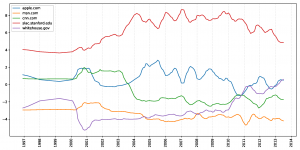
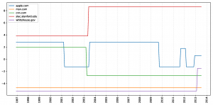
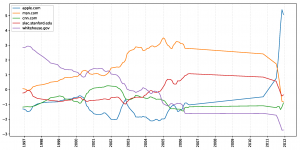
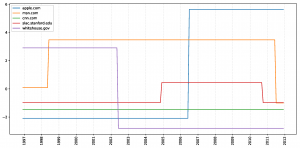
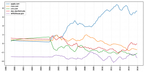
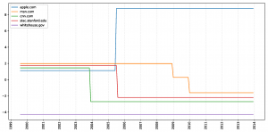
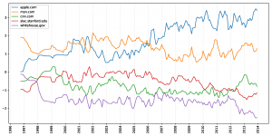
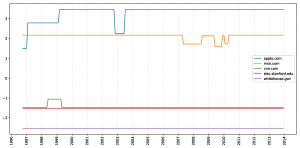

Bardia Doosti, David J. Crandall and Norman Makoto Su
Since its ambitious beginnings to create a hyperlinked information system, the web has evolved over 25 years to become our primary means of expression and communication. No longer limited to text, the evolving visual features of websites are important signals of larger societal shifts in humanity’s technologies, aesthetics, cultures, and industries. Just as paintings can be analyzed to study an era’s social norms and culture, techniques for systematically analyzing large-scale archives of the web could help unpack global changes in the visual appearance of websites and of modern society itself. In this paper, we propose automated techniques for characterizing the visual “style” of websites and use this analysis to discover and visualize shifts over time and across website domains. In particular, we use deep Convolutional Neural Networks to classify websites into 26 subject areas (e.g., technology, news media websites) and 4 design eras. The features produced by this process then allow us to quantitatively characterize the appearance of any given website. We demonstrate how to track changes in these features over time and introduce a technique using Hidden Markov Models (HMMs) to discover sudden, significant changes in these appearances. Finally, we visualize the features learned by our network to help reveal the distinctive visual elements that were discovered by the network.
Overview and Results
Dataset
Web Design Era Detection
For the design era detection task we used the internet archive to obtain snapshots of 35 websites from 1996 to 2014.
Genre Detection
Frequency of website genres in our dataset
For the Genre detection task we used CrowdFlower’s URL categorization dataset, which consists of more than 31,000 URL domains categorized in 26 genres.
Classification and Visualization
For the first step we trained two separate networks for detecting the category and design era of a website. But our focus is not on just getting the best result on classification; the more important issue was visualizing the features learned by the network.
We used the Class Activation Mapping (CAM) technique to visualize the most important part of a page’s web design for each class (web site category or web design era)
Heat maps showing which parts of a website support each of three different class hypotheses, according to the classifier.
For example as websites in 90s were narrower, the network used this fact (white margins on the right and bottom of the website) to detect 90s websites.
Adobe.com in 1997 (left) and network’s attention on the margins (right)
Apple.com in 1999 (left) and network’s attention on the margins (right)
As the speed of the internet increased, the size of the pictures in the webpages became larger and the network used this fact to classify the websites from the 2009-2013 era.

Xerox.com in 2013 (left) and network’s attention on the big objects (right)
Apple.com in 2009 (left) and network’s attention on the big objects (right)
But for the genre detection it seems that the network’s attention is on the objects used from that class in the web design. For example for the Auto and Vehicle class, the network is trained to find Cars in the website.
Bmw.com.tr from Auto and Vehicle class (left) and network’s attention on the Cars used in the design (right)
Browneyedbaker.com from Food and Drink class (left) and network’s attention on the Foods used in the design (right)
Web Designs Across Eras
To understand how web design has changed over time and how major design pioneers influenced other websites, we trained a network with five major websites from different categories (apple.com, msn.com, cnn.com, slac.stanford.edu and whithouse.gov) and used other websites for testing the model. We plotted network confidence over time.
To make the sudden changes of the plots more visible we used Hidden Markov Model (HMM) to generate a smoothed plot revealing sudden moves of the graph.
As we can see in the plot below, indiana.edu which is an educational website, is detected to be very similar to slac.stanford.edu, another educational website.

Similarity of indiana.edu to each canonical site
Also in the plots below we see that yahoo.com was detected to be very similar to msn.com for a long time but in recent years it was detected to be very similar to apple.com.

Similarity of yahoo.com to each canonical site

Similarity of amazon.com to each canonical site
Finally, we merged all the sites and plotted the confidence of the network to see how web design as a whole has changed over time.

As we see in this graph, these sites were detected to be very similar to msn.com until 2006, when they were detected to be more and more similar to apple.com. As we can also see in the HMM generated graph, the other three websites didn’t seem to change a lot in these years.
Image Generation
In addition to recognition we wanted to show what characterized a web design in general for a particular genre or era. We used trained features of the network to produce new web designs which were not part of our dataset. We used Deep Convolutional Generative Adversarial Networks (DCGAN) trained with more than 170 thousand contemporary websites. Each block of the picture below is produced with a random initialization.
Websites generated by our Generative Adversarial Network
BibTeX
@inproceedings{Doosti:2017:DSH:3091478.3091503,
author = {Doosti, Bardia and Crandall, David J. and Su, Norman Makoto},
title = {A Deep Study into the History of Web Design},
booktitle = {Proceedings of the 2017 ACM on Web Science Conference},
series = {WebSci '17},
year = {2017},
isbn = {978-1-4503-4896-6},
location = {Troy, New York, USA},
pages = {329--338},
numpages = {10},
url = {http://doi.acm.org/10.1145/3091478.3091503},
doi = {10.1145/3091478.3091503},
acmid = {3091503},
publisher = {ACM},
address = {New York, NY, USA},
keywords = {convolutional neural networks, cultural analytics, deep learning, web design},
}
Resources
Caffe Model
We provide our trained caffe models for web category detection and web design era detection. Both of the models are AlexNet enhanced with the global average pooling layer for the Class Activation Mapping.
- Web category detection model: Download
- Web design era detection model: Download
- Web Designs Across Eras Download
For fine-tuning this models you have to use -weights in the training and pass the caffemodel file. More info
Internet Archive Crawler
You can download our Internet Archive Crawler from here. It uses PhantomJS so download pre-compiled file and put it beside our code. If you used our code or models please cite our paper.
Acknowledgements
We thank Wen Chen and Mingze Xu for early development of our HMM for temporal smoothing. This work was supported in part by the National Science Foundation through CAREER grant IIS-1253549 and Nvidia, and used the compute facilities of the FutureSystems Romeo cluster which is supported by Indiana University and NSF RaPyDLI grant 1439007.
| National Science Foundation |
Nvidia |